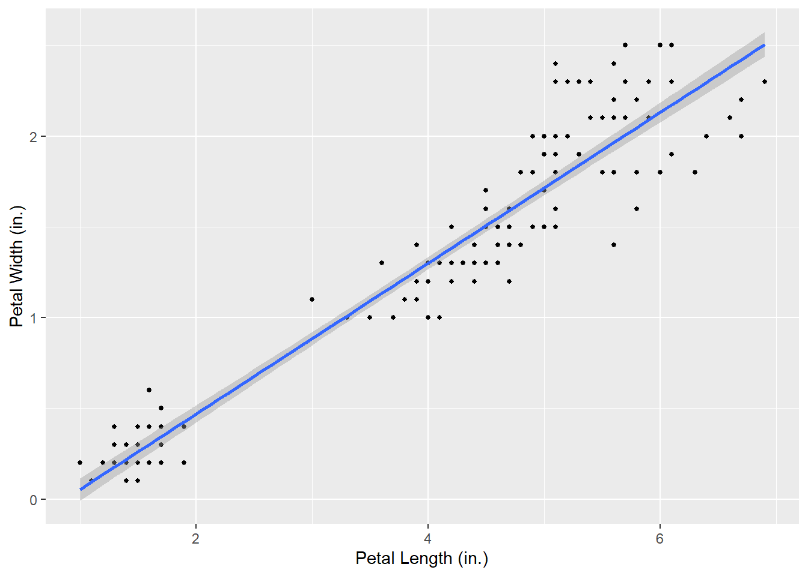

library(ggplot2)
iris <- iris
petal.plot <- ggplot(data = iris, aes(x = Petal.Length, y = Petal.Width)) +
geom_point(size=1) +
geom_smooth(method="lm")+
labs(
x = "Petal Length (in.)",
y= "Petal Width (in.)"
)
petal.plot`geom_smooth()` using formula = 'y ~ x'